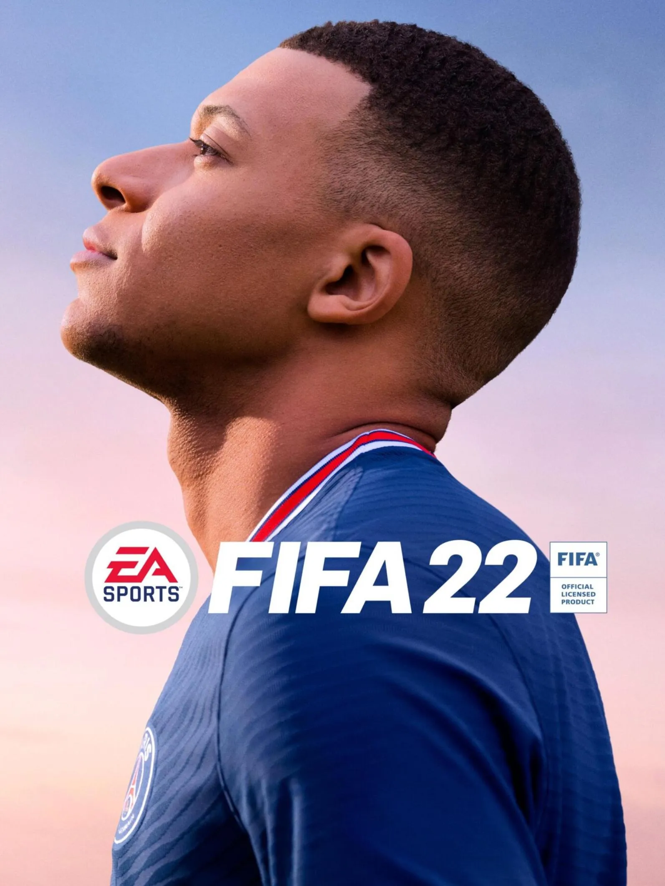

.webp)
"PRESENTAMOS LOS MEJORES JUEGO DEL 2022"
LEGO Star Wars The Skywalker Saga
Lego Star Wars: The Skywalker Saga es un videojuego de Lego del género acción-aventura desarrollado por TT Games y distribuido por Warner Bros. Interactive Entertainment. Estuvo programado para ser lanzado a principios de 2021 para las plataformas Microsoft Windows, Nintendo Switch, PlayStation 4, PlayStation 5, Xbox One, y Xbox Series X|S, sin embargo en abril de 2021 se retrasó indefinidamente. Su fecha de salida definitiva fue el 5 de abril del 2022. El juego adaptó las nueve películas de la saga Skywalker añadiendo a estas el humor usual de los videojuegos Lego.
Lanzamiento
El 7 de mayo de 2020, a través del canal de YouTube de Star Wars, se mencionó que la fecha de lanzamiento sería el 20 de octubre de 2020.
Trailer del viego
FIFA2022
 FIFA 22 es un videojuego desarrollado por EA Vancouver y EA Romania, siendo publicado por EA Sports. Está disponible para PlayStation 4, PlayStation 5, Xbox Series X/S, Xbox One, Microsoft Windows, Google Stadia y Nintendo Switch. Es la vigésimo novena entrega en la serie FIFA y fue lanzado el 1 de octubre de manera global.
FIFA 22 es un videojuego desarrollado por EA Vancouver y EA Romania, siendo publicado por EA Sports. Está disponible para PlayStation 4, PlayStation 5, Xbox Series X/S, Xbox One, Microsoft Windows, Google Stadia y Nintendo Switch. Es la vigésimo novena entrega en la serie FIFA y fue lanzado el 1 de octubre de manera global.
Lanzamiento
Aquí podrás encontrar la fecha de lanzamiento oficial en España de FIFA 22 en PS5, PC, PS4, Xbox One, Xbox Series X/S, Switch, desarrollado por EA Sports. Estate atento y reserva FIFA 22 antes de que esté disponible en tiendas.
Lanzamiento en PC: 30/9/2021
Lanzamiento en PS5: 1/10/2021
Lanzamiento en Xbox One: 1/10/2021
Trailer del viego
League of Legends
League of Legends (también conocido por sus siglas LoL), es un videojuego multijugador de arena de batalla en línea desarrollado y publicado por Riot Games. Inspirándose en Defense of the Ancients, un mapa personalizado para Warcraft III, los fundadores de Riot buscaron desarrollar un juego independiente del mismo género. Desde su lanzamiento en octubre de 2009, LoL ha sido un juego gratuito y se monetiza a través de la compra de elementos para la personalización de personajes. El juego está disponible para Microsoft Windows y macOS.
Lanzamiento
El próximo 27 de octubre de 2019 se cumplirá una década desde la publicación original de League of Legends. Mucho ha llovido y muchos reworks han llegado desde entonces. El primero en la frente, durante diciembre de 2009, después vendría otro en febrero de 2011, tras finalizar la primera temporada competitiva.
Trailer del viego
Dragon Ball The Breakers
Dragon Ball: The Breakers es un próximo videojuego multijugador de survival horror desarrollado por Dimps y publicado por Bandai Namco Entertainment. Su lanzamiento está previsto para el 2022 en PlayStation 4, Xbox One, Nintendo Switch y Microsoft Windows.
Se trata de un videojuego asimétrico de supervivencia en el que un villano (denominado como Raider) debe cazar y eliminar a siete supervientes. A diferencia de la mayoría de los videojuegos de Dragon Ball, los jugadores que asumen el rol de supervivientes no controlan a Goku ni a ninguno de los Guerreros Z, sino a un grupo de ciudadanos comunes sin superpoderes. A su vez, el jugador que se desempeñe como Raider podrá seleccionar a un villano famoso de la franquicia como Cell, Freezer o Majin Boo.
Lanzamiento
El juego multijugador asimétrico basado en el manganime de Akira Toriyama por fin tiene fecha de lanzamiento. Bandai Namco ha anunciado que el título llegará a las tiendas el próximo 14 de octubre de 2022 a PS4, PS5, Xbox One, Xbox Series X, Xbox Series S, Nintendo Switch y PC. Las versiones de nueva generación funcionarán a través de la retrocompatibilidad, tal y como ha indicado la compañía en nota de prensa.
Trailer del viego
Valorant
Valorant es un hero shooter en primera persona multijugador gratuito desarrollado y publicado por Riot Games. El juego se anunció por primera vez con el nombre en clave Project A en octubre de 2019. Fue lanzado para Microsoft Windows el 2 de junio de 2020 después de su beta cerrada lanzada el 7 de abril de 2020. Valorant se inspira en la serie de videojuegos de disparos táctico Counter-Strike y toma prestadas varias mecánicas, como el menú de compra, los patrones de spray y la imprecisión al moverse.
Lanzamiento
Valorant se dio a conocer por primera vez bajo el título provisional Project A en octubre de 2019. Se anunció oficialmente el 1 de marzo de 2020, con un video de jugabilidad en YouTube llamado "The Round".La versión beta cerrada del juego se lanzó el 7 de abril de 2020 en los Estados Unidos, Canadá, Europa, Rusia y Turquía. Valorant fue lanzado el 2 de junio de 2020.
Trailer del viego
Minecraft
Minecraft es un videojuego de construcción de tipo «mundo abierto» o sandbox creado originalmente por el sueco Markus Persson (conocido comúnmente como «Notch»), y posteriormente desarrollado por Mojang Studios (actualmente parte de Microsoft). Fue lanzado el 17 de mayo de 2009, y después de numerosos cambios, su primera versión estable «1.0» fue publicada el 18 de noviembre de 2011.
Lanzamiento
Fue el 17 de mayo de 2009 cuando el programador sueco Markus Persson, más conocido como ‘Notch’, publicó la primera versión del que probablemente sea el juego más importante e influyente de la última década.
Trailer del viego
Stray
Stray es un juego de aventuras desarrollado por BlueTwelve Studio y publicado por Annapurna Interactive. Anteriormente conocido como HK_Project, el juego fue lanzado el 19 de julio de 2022 para Microsoft Windows, PlayStation 4 y PlayStation 5. La historia se centra en un gato callejero perdido en una ciudad de robots en la que, para escapar y reencontrarse con su familia, debe resolver un antiguo misterio.
Lanzamiento
Como parte del State of Play que estamos viviendo esta noche, Stray ha confirmado su fecha de lanzamiento: llegará el próximo 19 de julio.
Trailer del viego
Among us
Among Usb (traducido como entre nosotros) es un videojuego de género party y multijugador en línea desarrollado por la compañía estadounidense Innersloth y distribuido entre junio y noviembre de 2018 para las plataformas Android, iOS y Windows. El 15 de diciembre de 2020 se anunció su disponibilidad en Nintendo Switch, mientras que su adaptación a las consolas Xbox One y Xbox Series X|S se confirmó para 14 de diciembre de 2021.
Lanzamiento
El 15 de diciembre de 2020 se anunció su disponibilidad en, se confirmó para 14 de diciembre de 2021.
Trailer del viego
Grand Theft Auto V (GTA V)
Grand Theft Auto V es un videojuego de acción-aventura desarrollado por el estudio Rockstar North y distribuido por Rockstar Games.
Lanzamiento
Fue lanzado el 17 de septiembre de 2013 para las consolas PlayStation 3 y Xbox 360.
Trailer del viego